import warnings
import sys
sys.path.insert(0, '..')
import arviz as az
import bambi as bmb
import matplotlib.pyplot as plt
import numpy as np
import pandas as pd
import pymc as pm
import xarray as xr
az.style.use("arviz-variat")
az.rcParams["stats.ci_prob"] = 0.95
plt.rcParams["figure.dpi"] = 75
SEED = 7412Roaches cross-validation model checking and comparison
This notebook includes the code code for the Bayesian Workflow book Chapter 24 Leave-one-out cross validation model checking and comparison: Roaches.
1 Introduction
This case study demonstrates cross-validation model comparison, and posterior and cross-validation predictive checking of models. Furthermore the notebook demonstrates how to use integrated PSIS-LOO with varying intercept (“random effect”) models.
Load packages
from cmdstanpy import CmdStanModel, disable_logging
disable_logging()
from utils import print_stan2 Data
The roaches data example comes from Chapter 8.3 of Gelman and Hill (2007).
the treatment and control were applied to 160 and 104 apartments, respectively, and the outcome measurement \(y_i\) in each apartment \(i\) was the number of roaches caught in a set of traps. Different apartments had traps for different numbers of days
In addition to an intercept, the regression predictors for the model are the pre-treatment number of roaches roach1, the treatment indicator treatment, and a variable indicating whether the apartment is in a building restricted to elderly residents senior. The distribution of roach1 is very skewed and we take a square root of it. Because the number of days for which the roach traps were used is not the same for all apartments in the sample, we include it as an exposure2 by adding \(\ln(u_i)\)) to the linear predictor \(\eta_i\) and it can be specified using the offset argument in bambi.
Load data
roaches = pd.read_csv("data/roaches.csv")
roaches["sqrt_roach1"] = np.sqrt(roaches["roach1"])
roaches.head()| y | roach1 | treatment | senior | exposure2 | sqrt_roach1 | |
|---|---|---|---|---|---|---|
| 0 | 153 | 308.00 | 1 | 0 | 0.800000 | 17.549929 |
| 1 | 127 | 331.25 | 1 | 0 | 0.600000 | 18.200275 |
| 2 | 7 | 1.67 | 1 | 0 | 1.000000 | 1.292285 |
| 3 | 7 | 3.00 | 1 | 0 | 1.000000 | 1.732051 |
| 4 | 0 | 2.00 | 1 | 0 | 1.142857 | 1.414214 |
3 Poisson model
Fit a Poisson regression model with bambi
fit_p = bmb.Model(
"y ~ sqrt_roach1 + treatment + senior + offset(log(exposure2))",
roaches,
family="poisson",
link="log",
priors={
"sqrt_roach1": bmb.Prior("Normal", mu=0, sigma=1),
"treatment": bmb.Prior("Normal", mu=0, sigma=1),
"senior": bmb.Prior("Normal", mu=0, sigma=1),
},
)
idata_p = fit_p.fit(random_seed=SEED, idata_kwargs={"log_likelihood": True})
fit_p.predict(idata_p, kind="response", inplace=True, random_seed=SEED)Initializing NUTS using jitter+adapt_diag...1000Multiprocess sampling (4 chains in 4 jobs)
NUTS: [Intercept, sqrt_roach1, treatment, senior]/home/osvaldo/anaconda3/envs/arviz_1/lib/python3.14/site-packages/pymc/step_methods/hmc/quadpotential.py:321: RuntimeWarning: overflow encountered in dot
return 0.5 * np.dot(x, v_out)
/home/osvaldo/anaconda3/envs/arviz_1/lib/python3.14/site-packages/pymc/step_methods/hmc/quadpotential.py:321: RuntimeWarning: overflow encountered in dot
return 0.5 * np.dot(x, v_out)
/home/osvaldo/anaconda3/envs/arviz_1/lib/python3.14/site-packages/pymc/step_methods/hmc/quadpotential.py:321: RuntimeWarning: overflow encountered in dot
return 0.5 * np.dot(x, v_out)
/home/osvaldo/anaconda3/envs/arviz_1/lib/python3.14/site-packages/pymc/step_methods/hmc/quadpotential.py:321: RuntimeWarning: overflow encountered in dot
return 0.5 * np.dot(x, v_out)/home/osvaldo/anaconda3/envs/arviz_1/lib/python3.14/site-packages/pymc/sampling/mcmc.py:1164: FutureWarning: Passing `log_likelihood` via `idata_kwargs` is deprecated and will be removed in future versions. Call `pm.compute_log_likelihood(idata)` instead.
return _sample_return(
Sampling 4 chains for 1_000 tune and 1_000 draw iterations (4_000 + 4_000 draws total) took 5 seconds.Plot posterior
pc = az.plot_ridge(
idata_p,
var_names=["sqrt_roach1", "treatment", "senior"],
combined=True,
)
pc.coords = {"column": "ridge"}
az.add_lines(pc, 0)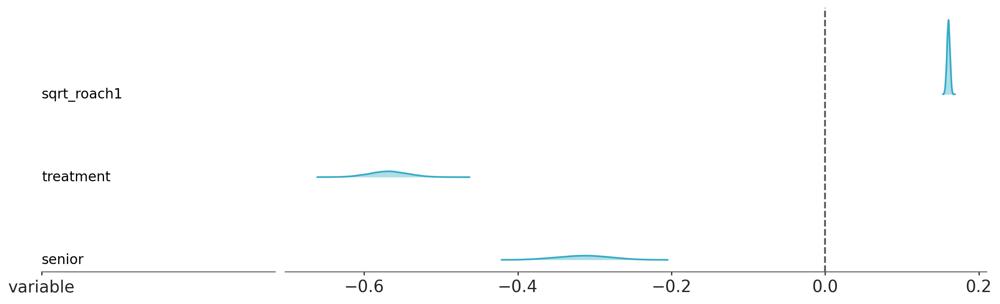
All marginal posteriors are clearly away from zero. We need to do some model checking before trusting these.
4 Posterior predictive checking
Posterior predictive checking can often detect problems and also provide more information about the reason. As the range of counts is large, we can use kernel density estimate plot (Säilynoja et al. 2025). In case of discrete data, ArviZ defaults to using a histogram, which could also be a good option here.
pc = az.plot_ppc_dist(idata_p, kind="kde")
pc.facet_map("set_xlim", limits=(0, 400))
pc.facet_map("set_xscale", scale="sqrt")/home/osvaldo/proyectos/00_BM/arviz-devs/arviz-plots/src/arviz_plots/plots/utils_ppc.py:66: UserWarning: Detected at least one discrete variable.
Consider using plot_ppc variants specific for discrete data, such as plot_ppc_pava or plot_ppc_rootogram.
warn_if_discrete(observed_dist, predictive_dist, kind)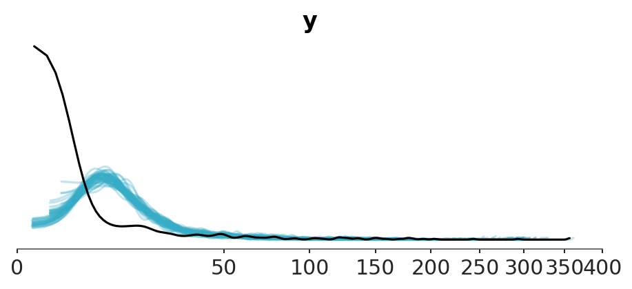
We see that the marginal distribution of model replicated data is clearly different from the observed data which are more dispersed. Posterior predictive checking can sometimes have significant bias due to double use of the data, but in this case the discrepancy is so big that further checks are not needed.
Although in this case the model misspecification is obvious with kernel density plot, too, for count the often a better choice is a rootogram variant proposed by Säilynoja et al. (2025).
pc = az.plot_ppc_rootogram(idata_p)
pc.facet_map("set_xscale", scale="sqrt")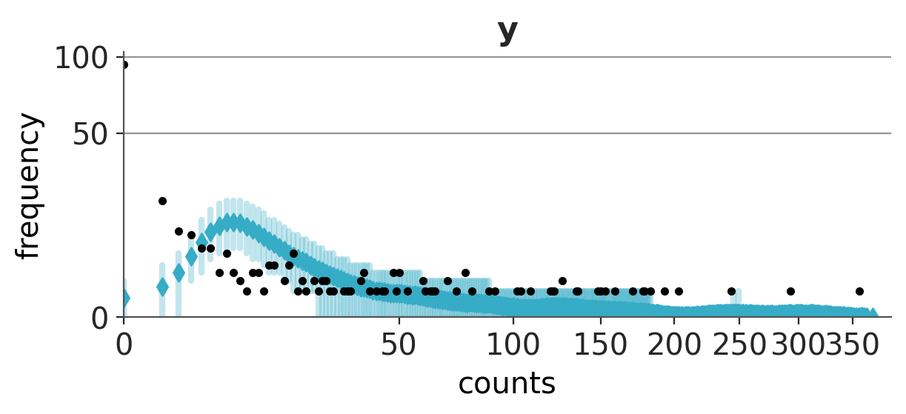
4.1 Cross-validation model comparison
For demonstration, we show what would happen in cross validation based model comparison if we would ignore posterior predictive checking result.
We use Pareto-smoothed importance sampling leave-one-out (PSIS-LOO) cross-validation (Vehtari, Gelman, and Gabry 2017) as it is very fast to compute.
loo_p = az.loo(idata_p)
loo_p/home/osvaldo/anaconda3/envs/arviz_1/lib/python3.14/site-packages/arviz_stats/loo/helper_loo.py:1146: UserWarning: Estimated shape parameter of Pareto distribution is greater than 0.70 for one or more samples. You should consider using a more robust model, this is because importance sampling is less likely to work well if the marginal posterior and LOO posterior are very different. This is more likely to happen with a non-robust model and highly influential observations.
warnings.warn(Computed from 4000 posterior samples and 262 observations log-likelihood matrix.
Estimate SE
elpd_loo -5450.98 690.81
p_loo 245.03 -
There has been a warning during the calculation. Please check the results.
------
Pareto k diagnostic values:
Count Pct.
(-Inf, 0.70] (good) 249 95.0%
(0.70, 1] (bad) 6 2.3%
(1, Inf) (very bad) 7 2.7%We get warning about high Pareto-\(\hat{k}\)’s in PSIS-LOO computation. We store the result for later use.
Now we examine LOO results.
p_loo is about 278, which is much higher than the number of parameters (4), which indicates bad misspecification, which we did already see also with posterior predictive checking. Many high Pareto-\(\hat{k}\)’s in PSIS-LOO without moment matching were likely also caused by model misspecification.
For demonstration, we show what would happen if we would try to use cross validation based model comparison to assess predictive relevance of the covariates. We later compare these to results when using better models.
We form 3 models by dropping each of the covariates out at a time.
fit_p_m1 = bmb.Model(
"y ~ treatment + senior + offset(log(exposure2))",
roaches,
family="poisson",
link="log",
priors={
"treatment": bmb.Prior("Normal", mu=0, sigma=1),
"senior": bmb.Prior("Normal", mu=0, sigma=1),
},
)
idata_p_m1 = fit_p_m1.fit(random_seed=SEED, idata_kwargs={"log_likelihood": True})
fit_p_m2 = bmb.Model(
"y ~ sqrt_roach1 + senior + offset(log(exposure2))",
roaches,
family="poisson",
link="log",
priors={
"sqrt_roach1": bmb.Prior("Normal", mu=0, sigma=1),
"senior": bmb.Prior("Normal", mu=0, sigma=1),
},
)
idata_p_m2 = fit_p_m2.fit(random_seed=SEED, idata_kwargs={"log_likelihood": True})
fit_p_m3 = bmb.Model(
"y ~ sqrt_roach1 + treatment + offset(log(exposure2))",
roaches,
family="poisson",
link="log",
priors={
"sqrt_roach1": bmb.Prior("Normal", mu=0, sigma=1),
"treatment": bmb.Prior("Normal", mu=0, sigma=1),
},
)
idata_p_m3 = fit_p_m3.fit(random_seed=SEED, idata_kwargs={"log_likelihood": True})Initializing NUTS using jitter+adapt_diag...1000Multiprocess sampling (4 chains in 4 jobs)
NUTS: [Intercept, treatment, senior]/home/osvaldo/anaconda3/envs/arviz_1/lib/python3.14/site-packages/pymc/sampling/mcmc.py:1164: FutureWarning: Passing `log_likelihood` via `idata_kwargs` is deprecated and will be removed in future versions. Call `pm.compute_log_likelihood(idata)` instead.
return _sample_return(
Sampling 4 chains for 1_000 tune and 1_000 draw iterations (4_000 + 4_000 draws total) took 3 seconds.
Initializing NUTS using jitter+adapt_diag...1000Multiprocess sampling (4 chains in 4 jobs)
NUTS: [Intercept, sqrt_roach1, senior]/home/osvaldo/anaconda3/envs/arviz_1/lib/python3.14/site-packages/pymc/step_methods/hmc/quadpotential.py:321: RuntimeWarning: overflow encountered in dot
return 0.5 * np.dot(x, v_out)
/home/osvaldo/anaconda3/envs/arviz_1/lib/python3.14/site-packages/pymc/step_methods/hmc/quadpotential.py:321: RuntimeWarning: overflow encountered in dot
return 0.5 * np.dot(x, v_out)
/home/osvaldo/anaconda3/envs/arviz_1/lib/python3.14/site-packages/pymc/step_methods/hmc/quadpotential.py:321: RuntimeWarning: overflow encountered in dot
return 0.5 * np.dot(x, v_out)/home/osvaldo/anaconda3/envs/arviz_1/lib/python3.14/site-packages/pymc/sampling/mcmc.py:1164: FutureWarning: Passing `log_likelihood` via `idata_kwargs` is deprecated and will be removed in future versions. Call `pm.compute_log_likelihood(idata)` instead.
return _sample_return(
Sampling 4 chains for 1_000 tune and 1_000 draw iterations (4_000 + 4_000 draws total) took 4 seconds.
Initializing NUTS using jitter+adapt_diag...1000Multiprocess sampling (4 chains in 4 jobs)
NUTS: [Intercept, sqrt_roach1, treatment]/home/osvaldo/anaconda3/envs/arviz_1/lib/python3.14/site-packages/pymc/step_methods/hmc/quadpotential.py:321: RuntimeWarning: overflow encountered in dot
return 0.5 * np.dot(x, v_out)
/home/osvaldo/anaconda3/envs/arviz_1/lib/python3.14/site-packages/pymc/step_methods/hmc/quadpotential.py:321: RuntimeWarning: overflow encountered in dot
return 0.5 * np.dot(x, v_out)
/home/osvaldo/anaconda3/envs/arviz_1/lib/python3.14/site-packages/pymc/step_methods/hmc/quadpotential.py:321: RuntimeWarning: overflow encountered in dot
return 0.5 * np.dot(x, v_out)/home/osvaldo/anaconda3/envs/arviz_1/lib/python3.14/site-packages/pymc/sampling/mcmc.py:1164: FutureWarning: Passing `log_likelihood` via `idata_kwargs` is deprecated and will be removed in future versions. Call `pm.compute_log_likelihood(idata)` instead.
return _sample_return(
Sampling 4 chains for 1_000 tune and 1_000 draw iterations (4_000 + 4_000 draws total) took 4 seconds.az.compare({
"Poisson full model": idata_p,
"Poisson w/o sqrt(roach1)": idata_p_m1,
"Poisson w/o treatment": idata_p_m2,
"Poisson w/o senior": idata_p_m3,
})/home/osvaldo/anaconda3/envs/arviz_1/lib/python3.14/site-packages/arviz_stats/loo/helper_loo.py:1146: UserWarning: Estimated shape parameter of Pareto distribution is greater than 0.70 for one or more samples. You should consider using a more robust model, this is because importance sampling is less likely to work well if the marginal posterior and LOO posterior are very different. This is more likely to happen with a non-robust model and highly influential observations.
warnings.warn(
/home/osvaldo/anaconda3/envs/arviz_1/lib/python3.14/site-packages/arviz_stats/loo/helper_loo.py:1146: UserWarning: Estimated shape parameter of Pareto distribution is greater than 0.70 for one or more samples. You should consider using a more robust model, this is because importance sampling is less likely to work well if the marginal posterior and LOO posterior are very different. This is more likely to happen with a non-robust model and highly influential observations.
warnings.warn(
/home/osvaldo/anaconda3/envs/arviz_1/lib/python3.14/site-packages/arviz_stats/loo/helper_loo.py:1146: UserWarning: Estimated shape parameter of Pareto distribution is greater than 0.70 for one or more samples. You should consider using a more robust model, this is because importance sampling is less likely to work well if the marginal posterior and LOO posterior are very different. This is more likely to happen with a non-robust model and highly influential observations.
warnings.warn(
/home/osvaldo/anaconda3/envs/arviz_1/lib/python3.14/site-packages/arviz_stats/loo/helper_loo.py:1146: UserWarning: Estimated shape parameter of Pareto distribution is greater than 0.70 for one or more samples. You should consider using a more robust model, this is because importance sampling is less likely to work well if the marginal posterior and LOO posterior are very different. This is more likely to happen with a non-robust model and highly influential observations.
warnings.warn(| rank | elpd_diff | dse | p_worse | diag_diff | diag_elpd | p | elpd | se | weight | |
|---|---|---|---|---|---|---|---|---|---|---|
| Poisson full model | 0 | 0.0 | 0.0 | NaN | 13 k̂ > 0.70 | 245.0 | -5000.0 | 690.0 | 0.14 | |
| Poisson w/o senior | 1 | -0.0 | 90.0 | 0.59 | 11 k̂ > 0.70 | 188.7 | -5000.0 | 670.0 | 0.32 | |
| Poisson w/o treatment | 2 | -200.0 | 200.0 | 0.88 | 11 k̂ > 0.70 | 196.4 | -6000.0 | 770.0 | 0.38 | |
| Poisson w/o sqrt(roach1) | 3 | -3000.0 | 690.0 | 1.00 | 14 k̂ > 0.70 | 266.4 | -8000.0 | 900.0 | 0.16 |
Based on elpd_diff and se_diff the roaches covariate would be relevant, but although dropping treatment or senior covariate will make a large change to elpd, the uncertainty is also very large and cross-validation indicates that these covariates are not necessarily relevant. The posterior marginals are conditional on the model, but cross-validation is more cautious by not using any model for the future data distribution.
5 Negative binomial model
We change the Poisson model to a more robust negative binomial model. Often it would be sensible to start with negative binomial model for counts and skip the Poisson model.
fit_nb = bmb.Model(
"y ~ sqrt_roach1 + treatment + senior + offset(log(exposure2))",
roaches,
family="negativebinomial",
link="log",
priors={
"sqrt_roach1": bmb.Prior("Normal", mu=0, sigma=1),
"treatment": bmb.Prior("Normal", mu=0, sigma=1),
"senior": bmb.Prior("Normal", mu=0, sigma=1),
},
)
idata_nb = fit_nb.fit(random_seed=SEED, idata_kwargs={"log_likelihood": True})
fit_nb.predict(idata_nb, kind="response", inplace=True, random_seed=SEED)1000Initializing NUTS using jitter+adapt_diag...
Multiprocess sampling (4 chains in 4 jobs)
NUTS: [alpha, Intercept, sqrt_roach1, treatment, senior]/home/osvaldo/anaconda3/envs/arviz_1/lib/python3.14/site-packages/pymc/sampling/mcmc.py:1164: FutureWarning: Passing `log_likelihood` via `idata_kwargs` is deprecated and will be removed in future versions. Call `pm.compute_log_likelihood(idata)` instead.
return _sample_return(
Sampling 4 chains for 1_000 tune and 1_000 draw iterations (4_000 + 4_000 draws total) took 8 seconds.Plot posterior
pc = az.plot_ridge(
idata_nb,
var_names=["sqrt_roach1", "treatment", "senior"],
combined=True,
)
pc.coords = {"column": "ridge"}
az.add_lines(pc, 0)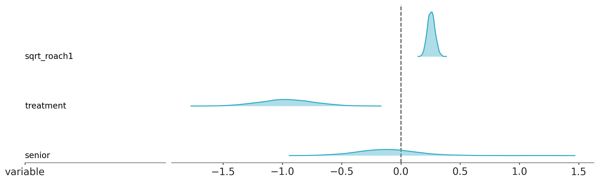
Treatment effect is much closer to zero, and senior effect has lot of probability mass on both sides of 0. So it matters, which model we use, and we should trust posteriors only if the model passes predictive checking.
5.1 Posterior and LOO predictive checking
We use posterior predictive checking to compare marginal data and predictive distributions.
pc = az.plot_ppc_dist(idata_nb, kind="kde")
pc.facet_map("set_xlim", limits=(0, 400))
pc.facet_map("set_xscale", scale="sqrt")/home/osvaldo/proyectos/00_BM/arviz-devs/arviz-plots/src/arviz_plots/plots/utils_ppc.py:66: UserWarning: Detected at least one discrete variable.
Consider using plot_ppc variants specific for discrete data, such as plot_ppc_pava or plot_ppc_rootogram.
warn_if_discrete(observed_dist, predictive_dist, kind)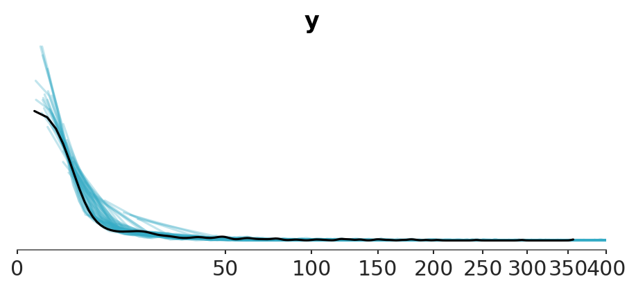
We see that the negative-binomial model is much better although it seems that the model predictive distribution has more mass for small counts than the real data. This discrepancy can also be an artifact from the kernel density estimate, and it is better to examine discrete rootogram
pc = az.plot_ppc_rootogram(idata_nb)
pc.facet_map("set_xlim", limits=(0, 400))
pc.facet_map("set_xscale", scale="sqrt")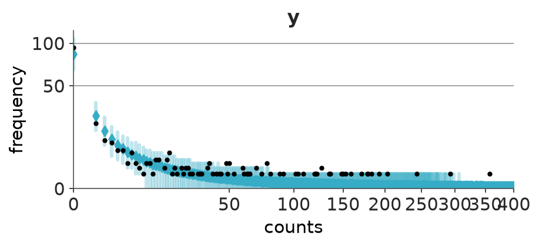
We see that the negative-binomial model is quite good, and there is no clear discrepancy based on the predictive intervals and data.
Instead of looking at the marginal distribution, we can look at the pointwise predictive distribution and corresponding observations.
pc = az.plot_ppc_interval(idata_nb)
pc.facet_map("set_yscale", scale="sqrt")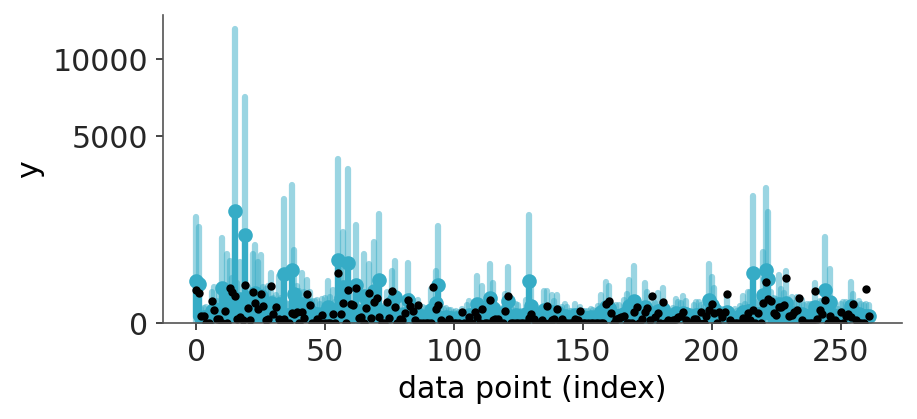
If the model predictive distributions are well calibrated, then the observations should look like randomly drawn from the predictive distributions. We can use a pit_ecdf to make probability integral transformation (PIT) plot to make the comparison of pointwise posterior predictive distributions and data. One PIT value is the cumulative density of one observation given the corresponding conditional predictive distribution. If the pointwise predictive distributions are well calibrated, PIT values are (almost) uniformly distributed. PIT-ECDF plot compares observed PIT values to uniform distribution.
az.plot_ppc_pit(idata_nb)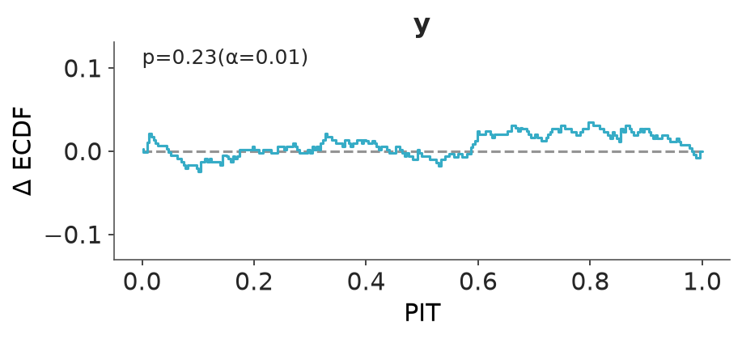
Now that posterior predictive check looks quite good, it is useful to be more careful and use LOO predictive checking, too. We first run PSIS-LOO computation to check it works.
loo_nb = az.loo(idata_nb)
loo_nb/home/osvaldo/anaconda3/envs/arviz_1/lib/python3.14/site-packages/arviz_stats/loo/helper_loo.py:1146: UserWarning: Estimated shape parameter of Pareto distribution is greater than 0.70 for one or more samples. You should consider using a more robust model, this is because importance sampling is less likely to work well if the marginal posterior and LOO posterior are very different. This is more likely to happen with a non-robust model and highly influential observations.
warnings.warn(Computed from 4000 posterior samples and 262 observations log-likelihood matrix.
Estimate SE
elpd_loo -881.41 38.15
p_loo 7.96 -
There has been a warning during the calculation. Please check the results.
------
Pareto k diagnostic values:
Count Pct.
(-Inf, 0.70] (good) 261 99.6%
(0.70, 1] (bad) 1 0.4%
(1, Inf) (very bad) 0 0.0%We get warning about high Pareto-\(\hat k\) and to improve computation accuracy, we re-run with moment matching. We later need some Pareto smoothed importance sampling intermediate computation results and save them, too.
# TODO: Add moment matching.Let’s look at the LOO results.
# TODO: show results from moment matching.All Pareto-\(\hat{k}\) are good indicating PSIS-LOO computation works well. p_loo is closer to the actual number of parameters, but still slightly larger than the total number of parameters 5 which is slightly suspicious. p_loo is small compared to the number of observations and we may expect pointwise LOO predictive intervals to be similar to pointwise posterior predictive intervals, and LOO-PIT-ECDF to look similar to posterior PIT-ECDF.
pc = az.plot_loo_interval(idata_nb)
pc.facet_map("set_yscale", scale="sqrt")/home/osvaldo/anaconda3/envs/arviz_1/lib/python3.14/site-packages/arviz_stats/loo/helper_loo.py:1146: UserWarning: Estimated shape parameter of Pareto distribution is greater than 0.70 for one or more samples. You should consider using a more robust model, this is because importance sampling is less likely to work well if the marginal posterior and LOO posterior are very different. This is more likely to happen with a non-robust model and highly influential observations.
warnings.warn(
/home/osvaldo/anaconda3/envs/arviz_1/lib/python3.14/site-packages/arviz_stats/loo/helper_loo.py:1146: UserWarning: Estimated shape parameter of Pareto distribution is greater than 0.70 for one or more samples. You should consider using a more robust model, this is because importance sampling is less likely to work well if the marginal posterior and LOO posterior are very different. This is more likely to happen with a non-robust model and highly influential observations.
warnings.warn(
/home/osvaldo/anaconda3/envs/arviz_1/lib/python3.14/site-packages/arviz_stats/loo/helper_loo.py:1146: UserWarning: Estimated shape parameter of Pareto distribution is greater than 0.70 for one or more samples. You should consider using a more robust model, this is because importance sampling is less likely to work well if the marginal posterior and LOO posterior are very different. This is more likely to happen with a non-robust model and highly influential observations.
warnings.warn(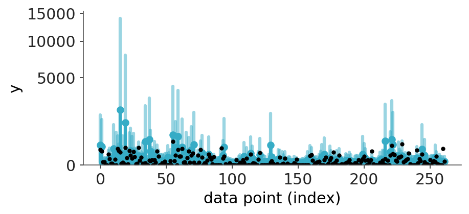
az.plot_loo_pit(idata_nb)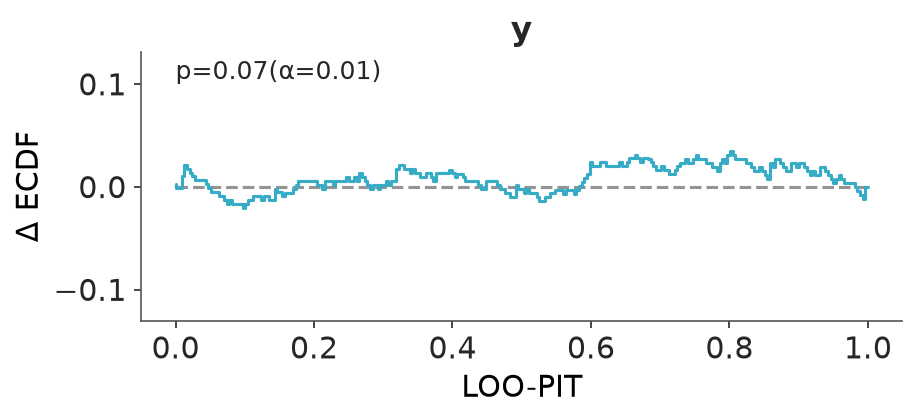
As we guessed, there is not much difference between LOO and posterior intervals, and LOO-PIT-ECDF and PIT-ECDF.
az.compare({
"Poisson": idata_p,
"Neg-bin": idata_nb,
})/home/osvaldo/anaconda3/envs/arviz_1/lib/python3.14/site-packages/arviz_stats/loo/helper_loo.py:1146: UserWarning: Estimated shape parameter of Pareto distribution is greater than 0.70 for one or more samples. You should consider using a more robust model, this is because importance sampling is less likely to work well if the marginal posterior and LOO posterior are very different. This is more likely to happen with a non-robust model and highly influential observations.
warnings.warn(
/home/osvaldo/anaconda3/envs/arviz_1/lib/python3.14/site-packages/arviz_stats/loo/helper_loo.py:1146: UserWarning: Estimated shape parameter of Pareto distribution is greater than 0.70 for one or more samples. You should consider using a more robust model, this is because importance sampling is less likely to work well if the marginal posterior and LOO posterior are very different. This is more likely to happen with a non-robust model and highly influential observations.
warnings.warn(| rank | elpd_diff | dse | p_worse | diag_diff | diag_elpd | p | elpd | se | weight | |
|---|---|---|---|---|---|---|---|---|---|---|
| Neg-bin | 0 | 0.0 | 0.0 | NaN | 1 k̂ > 0.70 | 8.0 | -880.0 | 38.0 | 1.0 | |
| Poisson | 1 | -5000.0 | 670.0 | 1.0 | 13 k̂ > 0.70 | 245.0 | -5000.0 | 690.0 | 0.0 |
In LOO model comparison the negative binomial model is much better than the Poisson model. As we have made the model checking, we know that the Poisson model is misspecified and could be dropped just based on that fact. As the difference is very big and many times bigger than diff_se, we can also be certain that negative binomials model has better predictive performance.
As Poisson is a special case of negative-Binomial, instead of using cross validation model comparison, we could have also seen that Poisson is not a good model by looking at the posterior of the over-dispersion parameter (which gets very small values), and there would not have been need to fit Poisson model at all.
pc = az.plot_dist(idata_nb, var_names="alpha")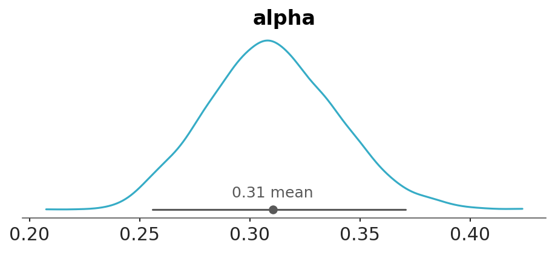
Posterior predictive rootogram and LOO-PIT-ECDF looked good, but for discrete models where some discrete values have relatively high probability it may miss things and it is good to examine more carefully how well calibrated predictive probabilities are. In roaches, 64% of observations are 0, and it makes sense to look how well we predict zeros or non-zeros. To check calibration of binary target predictive probabilities, we use PAV-adjusted reliability diagram Säilynoja et al. (2025). Although in this case, the difference is small, for demonstration we use LOO predictive probabilities instead of posterior predictive probabilities for non-zeros. In case of good calibration, the calibration line would stay mostly inside of the envelope.
pp_binary = (idata_nb.posterior_predictive["y"] > 0).astype(float)
y_binary = (idata_nb.observed_data["y"] > 0).astype(float)
idata_binary = az.from_dict({
"posterior_predictive": {"y": pp_binary},
"observed_data": {"y": y_binary},
})
pc = az.plot_ppc_pava(idata_binary, var_names="y")
pc.facet_map("set_xlim", limits=(0, 1))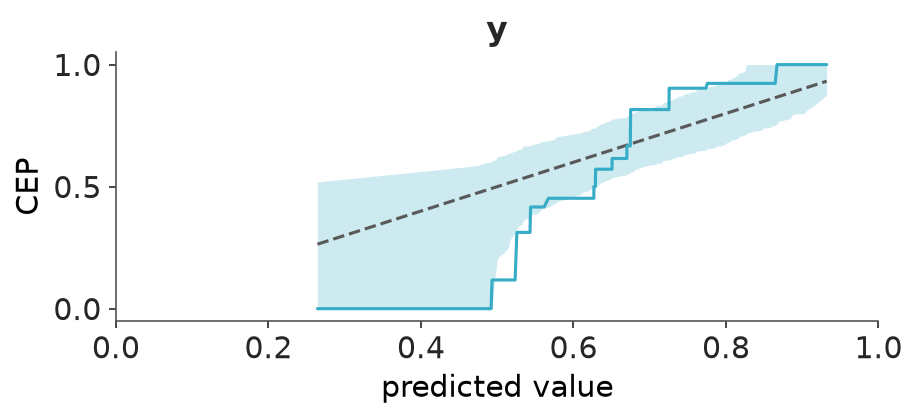
There is a slight miscalibration indicated by red curve being quite much outside of the blue envelope. We later build a zero-inflated model to test whether that would improve calibration and predictive performance.
6 Poisson model with varying intercepts
Sometimes overdispersion is modelled by adding varying intercepts (“random effects”) for each individual. Negative-binomial model can be considered as mixture of Poissons with mixing distribution being a gamma distribution. It is common to use normal prior for varying intercepts in log intensity scale. This kind of varying intercept model may fit the data better than negative binomial model for two reasons. First, it is possible that the normal variation in log intensity scale is closer to actual variation. Second, explicitly presenting the latent values and using a prior makes the model slightly more flexible as the posterior of the varying intercepts can be different from the prior. However, in this case with just one observation per varying intercept, it is likely that the posterior is close to normal as likelihood contribution from one observation for each varying intercept is weak. The following example demonstrates computational challenges with varying intercept approach.
We add varying intercept for each observation with normal prior using the formula term (1 | id). We use run the sampling four times longer to get high enough effective sample sizes.
roaches["id"] = np.arange(len(roaches))
roaches["id"] = roaches["id"].astype(str)
fit_pvi = bmb.Model(
"y ~ sqrt_roach1 + treatment + senior + (1 | id) + offset(log(exposure2))",
roaches,
family="poisson",
link="log",
priors={
"sqrt_roach1": bmb.Prior("Normal", mu=0, sigma=1),
"treatment": bmb.Prior("Normal", mu=0, sigma=1),
"senior": bmb.Prior("Normal", mu=0, sigma=1),
},
)
idata_pvi = fit_pvi.fit(
random_seed=SEED,
idata_kwargs={"log_likelihood": True},
)
fit_pvi.predict(idata_pvi, kind="response", inplace=True, random_seed=SEED)Initializing NUTS using jitter+adapt_diag...1000Multiprocess sampling (4 chains in 4 jobs)
NUTS: [Intercept, sqrt_roach1, treatment, senior, 1|id_sigma, 1|id_offset]/home/osvaldo/anaconda3/envs/arviz_1/lib/python3.14/site-packages/pymc/step_methods/hmc/quadpotential.py:321: RuntimeWarning: overflow encountered in dot
return 0.5 * np.dot(x, v_out)
/home/osvaldo/anaconda3/envs/arviz_1/lib/python3.14/site-packages/pymc/step_methods/hmc/quadpotential.py:321: RuntimeWarning: overflow encountered in dot
return 0.5 * np.dot(x, v_out)
/home/osvaldo/anaconda3/envs/arviz_1/lib/python3.14/site-packages/pymc/step_methods/hmc/quadpotential.py:321: RuntimeWarning: overflow encountered in dot
return 0.5 * np.dot(x, v_out)
/home/osvaldo/anaconda3/envs/arviz_1/lib/python3.14/site-packages/pymc/step_methods/hmc/quadpotential.py:321: RuntimeWarning: overflow encountered in dot
return 0.5 * np.dot(x, v_out)/home/osvaldo/anaconda3/envs/arviz_1/lib/python3.14/site-packages/pymc/sampling/mcmc.py:1164: FutureWarning: Passing `log_likelihood` via `idata_kwargs` is deprecated and will be removed in future versions. Call `pm.compute_log_likelihood(idata)` instead.
return _sample_return(
Sampling 4 chains for 1_000 tune and 1_000 draw iterations (4_000 + 4_000 draws total) took 13 seconds.
The rhat statistic is larger than 1.01 for some parameters. This indicates problems during sampling. See https://arxiv.org/abs/1903.08008 for details
The effective sample size per chain is smaller than 100 for some parameters. A higher number is needed for reliable rhat and ess computation. See https://arxiv.org/abs/1903.08008 for details6.1 Analyse posterior
Plot posterior
pc = az.plot_ridge(
idata_pvi,
var_names=["sqrt_roach1", "treatment", "senior"],
combined=True,
)
pc.coords = {"column": "ridge"}
az.add_lines(pc, 0)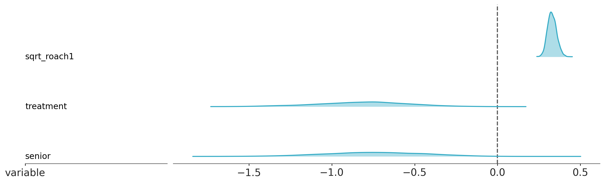
The marginals are similar as with negative-binomial model, but slightly closer to 0.
6.2 Cross-validation checking
Compute LOO using PSIS-LOO.
loo_pvi = az.loo(idata_pvi)
loo_pvi/home/osvaldo/anaconda3/envs/arviz_1/lib/python3.14/site-packages/arviz_stats/loo/helper_loo.py:1146: UserWarning: Estimated shape parameter of Pareto distribution is greater than 0.70 for one or more samples. You should consider using a more robust model, this is because importance sampling is less likely to work well if the marginal posterior and LOO posterior are very different. This is more likely to happen with a non-robust model and highly influential observations.
warnings.warn(Computed from 4000 posterior samples and 262 observations log-likelihood matrix.
Estimate SE
elpd_loo -629.99 24.24
p_loo 165.59 -
There has been a warning during the calculation. Please check the results.
------
Pareto k diagnostic values:
Count Pct.
(-Inf, 0.70] (good) 65 24.8%
(0.70, 1] (bad) 164 62.6%
(1, Inf) (very bad) 33 12.6%p_loo is about 164, which is less than the number of parameters 267, but it is relatively large compared to to the number of observations (p_loo >>N/5), which indicates very flexible model. In this case, this is due to having an intercept parameter for each observation. Removing one observation changes the posterior for that intercept so much that importance sampling fails (even with Pareto smoothing). Also the very large number of high \(k\) values is probably due to having very flexible model.
We can try to improve computation with moment matching.
# Add missing code and textaz.compare({
"Neg-bin": idata_nb,
"Poisson var. int.": idata_pvi,
})/home/osvaldo/anaconda3/envs/arviz_1/lib/python3.14/site-packages/arviz_stats/loo/helper_loo.py:1146: UserWarning: Estimated shape parameter of Pareto distribution is greater than 0.70 for one or more samples. You should consider using a more robust model, this is because importance sampling is less likely to work well if the marginal posterior and LOO posterior are very different. This is more likely to happen with a non-robust model and highly influential observations.
warnings.warn(
/home/osvaldo/anaconda3/envs/arviz_1/lib/python3.14/site-packages/arviz_stats/loo/helper_loo.py:1146: UserWarning: Estimated shape parameter of Pareto distribution is greater than 0.70 for one or more samples. You should consider using a more robust model, this is because importance sampling is less likely to work well if the marginal posterior and LOO posterior are very different. This is more likely to happen with a non-robust model and highly influential observations.
warnings.warn(| rank | elpd_diff | dse | p_worse | diag_diff | diag_elpd | p | elpd | se | weight | |
|---|---|---|---|---|---|---|---|---|---|---|
| Poisson var. int. | 0 | 0.0 | 0.0 | NaN | 197 k̂ > 0.70 | 165.6 | -630.0 | 24.0 | 1.0 | |
| Neg-bin | 1 | -250.0 | 18.0 | 1.0 | 1 k̂ > 0.70 | 8.0 | -880.0 | 38.0 | 0.0 |
There is not much difference, and the uncertainty is big. The column diag_diff shows that the distribution of the differences have thick tails, which indicates that elpd_diff, diff_se, and p_worse can not be fully trusted, and the conclusion is that we can’t know which model has better predictive performance.
To verify, that we can compare PSIS-LOO and KK-fold-CV results, we can run KK-fold-CV also for negative-binomial model.
# Add missing code and text6.3 Posterior predictive checking
We do posterior predictive checking for varying intercept Poisson model.
pc = az.plot_ppc_dist(idata_pvi, kind="kde")
pc.facet_map("set_xscale", scale="sqrt")/home/osvaldo/proyectos/00_BM/arviz-devs/arviz-plots/src/arviz_plots/plots/utils_ppc.py:66: UserWarning: Detected at least one discrete variable.
Consider using plot_ppc variants specific for discrete data, such as plot_ppc_pava or plot_ppc_rootogram.
warn_if_discrete(observed_dist, predictive_dist, kind)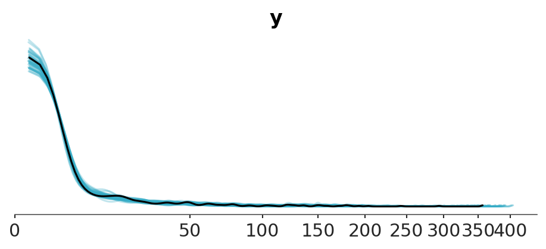
The match looks perfect, but that can be explained with having one parameter for each observation and kernel density estimate hiding something.
az.plot_ppc_rootogram(idata_pvi)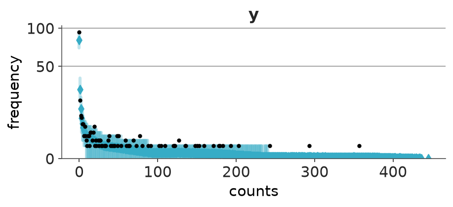
PIT-ECDF plot seems to indicate problems
az.plot_ppc_pit(idata_pvi)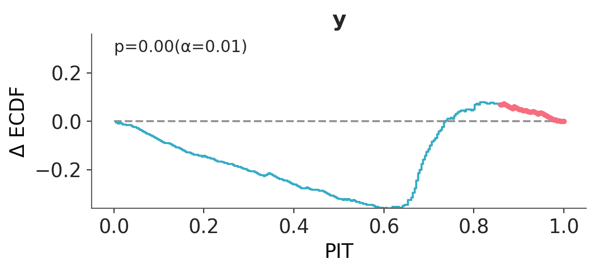
There are too many PIT values near 0.5. If we look at the predictive intervals and observations, we see that many the observations are in the middle of the posterior predictive interval, which can be explained by having very flexible model with one parameter for each observation. Posterior predictive checking is likely to fail with flexible models (having big p_loo).
pc = az.plot_ppc_interval(idata_pvi)
pc.facet_map("set_yscale", scale="sqrt")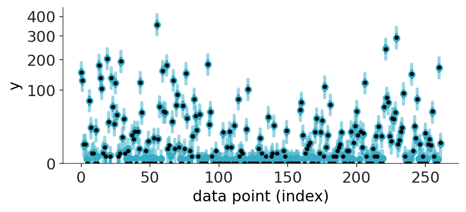
LOO-PIT’s can take into account the model flexibility, if the computation works. In this case LOO-PIT’s look slightly better, but still showing problems, but this is because PSIS-LOO fails (as discussed above)
az.plot_loo_pit(idata_pvi)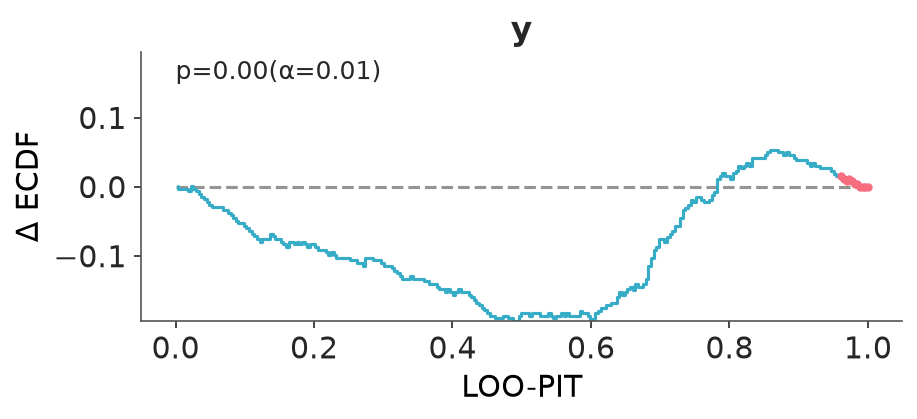
7 Poisson model with varying intercept and integrated LOO
Removing one observation changes the posterior for that intercept so much that importance sampling fails (even with Pareto smoothing). We can get improved stability by integrating that intercept out with something more accurate than the importance sampling (Vehtari et al. 2016). If there is only one group or individual specific parameter then we can integrate that out easily with 1D adaptive quadrature. 2 parameters can be handled with nested 1D quadratures, but for more parameters nested quadrature is likely to be too slow and other integration methods are needed.
As we can easily integrate out only 1 (or 2) parameters (per group / individual), it’s not easy to make a generic approach for bambi, and thus we illustrate the approach with direct Stan model code and cmdstanpy.
The following Stan model uses individual specific intercept term z[i] (with common prior with scale sigmaz). In the generated quantities, the usual log_lik computation is replaced with integrated approach. We also generate y_loorep which is the LOO predictive distribution given other parameters than z. This is needed to get the correct LOO predictive distributions when combined with integrated PSIS-LOO.
mod_p_vi = CmdStanModel(stan_file="poisson_vi_integrate.stan")
print_stan(mod_p_vi)// Poisson regression with hierarchical intercept (varying effect)
functions {
real integrand(real z, real notused, array[] real theta,
array[] real X_i, array[] int y_i) {
real sigmaz = theta[1];
real mu_i = theta[2];
real p = exp(normal_lpdf(z | 0, sigmaz) + poisson_log_lpmf(y_i | z + mu_i));
return (is_inf(p) || is_nan(p)) ? 0 : p;
}
}
data {
int<lower=0> N; // number of data points
int<lower=0> P; // number of covariates
matrix[N,P] X; // covariates
array[N] int<lower=0> y; // target
vector[N] offsett; // offset (offset variable name is reserved)
real integrate_1d_reltol;
}
parameters {
real alpha; // intercept
vector[P] beta; // slope
vector[N] z; // individual intercept (varying effect)
real<lower=0> sigmaz; // prior scale for z
}
model {
// priors
alpha ~ normal(0, 1);
beta ~ normal(0, 1);
z ~ normal(0, sigmaz);
sigmaz ~ normal(0, 1);
// observation model
y ~ poisson_log_glm(X, z+offsett+alpha, beta);
}
generated quantities {
// log_lik for PSIS-LOO
vector[N] log_lik;
vector[N] y_rep;
vector[N] y_loorep;
for (i in 1:N) {
// z as posterior draws, this would be challenging for PSIS-LOO (and WAIC)
// log_lik[i] = poisson_log_glm_lpmf({y[i]} | X[i,], z[i]+offsett[i]+alpha, beta);
// posterior predictive replicates conditional on p(z[i] | y[i])
// in theory these could be used with above (non-integrated) log_lik and PSIS-LOO
// to get draws from LOO predictive distribution, but the distribution of the
// ratios from above lok_lik is bad
real mu_i = offsett[i] + alpha + X[i,]*beta;
y_rep[i] = poisson_log_rng(z[i] + mu_i);
// we can integrate each z[i] out with 1D adaptive quadrature to get more
// stable log_lik and corresponding importance ratios
log_lik[i] = log(integrate_1d(integrand,
negative_infinity(),
positive_infinity(),
append_array({sigmaz}, {mu_i}),
{0}, // not used, but an empty array not allowed
{y[i]},
integrate_1d_reltol));
// conditional LOO predictive replicates conditional on p(z[i] | sigmaz, mu_i)
// these combined with integrated log_lik and PSIS-LOO provide
// more stable LOO predictive distributions
y_loorep[i] = poisson_log_rng(normal_rng(0, sigmaz) + mu_i);
}
}We could also move the integrated likelihood to the model block and not use MCMC to sample the varying intercepts at all. This would make marginal posterior easier for MCMC, but using quadrature integration \(N\) times for each leapfrog step in Hamiltonian Monte Carlo sampling will increase the sampling time more than what would be the benefit from the simpler marginal posterior. When we do the integration in the generated quantities, the quadrature is computed only for each saved iteration making the computation faster.
Next we compile the model, prepare the data, and sample. integrate_1d_reltol sets the relative tolerance for the adaptive 1D quadrature function integrate_1d (if with other model and data you see messages about error estimate of integral exceeding the given relative tolerance times norm of integral, you will get NaNs and need to increase the relative tolerance).
We increase the number of sampling iterations to improve effective sample size needed for better LOO-PIT plot.
N = len(roaches)
datap = {
"N": N,
"P": 3,
"offsett": np.log(roaches["exposure2"]).tolist(),
"X": roaches[["sqrt_roach1", "treatment", "senior"]].values.tolist(),
"y": roaches["y"].tolist(),
"integrate_1d_reltol": 1e-6,
}
fit_p_vi = mod_p_vi.sample(
data=datap,
seed=SEED,
show_progress=False,
iter_sampling = 8000,
thin = 8
)
idata_p_vi = az.from_cmdstanpy(
fit_p_vi,
posterior_predictive="y_loorep",
observed_data={"y": roaches["y"].values},
log_likelihood={"y": "log_lik"},
)
idata_p_vi["posterior_predictive"] = idata_p_vi["posterior_predictive"].ds.astype(int).rename(
{"y_loorep": "y", "y_loorep_dim_0": "y_dim_0"}
)The posterior is similar as above for varying intercept Poisson model, as it should be, as the generated quantities is not affecting the posterior.
pc = az.plot_ridge(
idata_p_vi,
var_names=["beta", "sigmaz"],
combined=True,
)
pc.coords = {"column": "ridge"}
az.add_lines(pc, 0)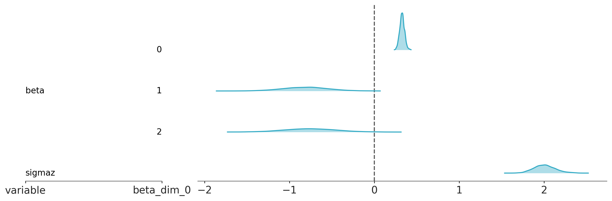
Now the PSIS-LOO doesn’t give warnings and the result is close to K-fold-CV.
loo_p_vi = az.loo(idata_p_vi)
loo_p_viComputed from 4000 posterior samples and 262 observations log-likelihood matrix.
Estimate SE
elpd_loo -878.39 38.11
p_loo 4.76 -
------
Pareto k diagnostic values:
Count Pct.
(-Inf, 0.70] (good) 262 100.0%
(0.70, 1] (bad) 0 0.0%
(1, Inf) (very bad) 0 0.0%az.compare({
"Poisson var. int. int-LOO": idata_p_vi,
"Neg-bin": idata_nb,
})/home/osvaldo/anaconda3/envs/arviz_1/lib/python3.14/site-packages/arviz_stats/loo/helper_loo.py:1146: UserWarning: Estimated shape parameter of Pareto distribution is greater than 0.70 for one or more samples. You should consider using a more robust model, this is because importance sampling is less likely to work well if the marginal posterior and LOO posterior are very different. This is more likely to happen with a non-robust model and highly influential observations.
warnings.warn(| rank | elpd_diff | dse | p_worse | diag_diff | diag_elpd | p | elpd | se | weight | |
|---|---|---|---|---|---|---|---|---|---|---|
| Poisson var. int. int-LOO | 0 | 0.0 | 0.0 | NaN | 4.8 | -880.0 | 38.0 | 0.56 | ||
| Neg-bin | 1 | -0.0 | 7.4 | 0.66 | |elpd_diff| < 4 | 1 k̂ > 0.70 | 8.0 | -880.0 | 38.0 | 0.44 |
Comparing to the negative binomial model there is not much difference, and the difference in elpd_diff compared to \(K\)-fold-CV may be partially explained by high variability due to thick tails of the pointwise elpd differences.
LOO-PIT plot looks good, although a bit more variation, which is probably due to lower effective sample sizes due to more challenging posterior than for negative binomial model.
az.plot_loo_pit(idata_p_vi)We check the calibration of predictive probabilities for zeros vs non-zeros. The calibration plot looks better than with negative binomial model. The predicted probabilities have wider range and the calibration curve stays better inside the envelope. Not shown here, but the varying intercepts are quite close to normally distributed (as we expected), and thus the difference to the negative binomial would be mostly the different distribution for the individual variation.
pp_binary = (idata_p_vi.posterior_predictive["y"] > 0).astype(int)
y_binary = (idata_p_vi.observed_data["y"] > 0).astype(int)
idata_binary_pvi = az.from_dict({
"posterior_predictive": {"y": pp_binary},
"observed_data": {"y": y_binary},
})
pc = az.plot_ppc_pava(idata_binary_pvi, var_names="y")
pc.facet_map("set_xlim", limits=(0, 1))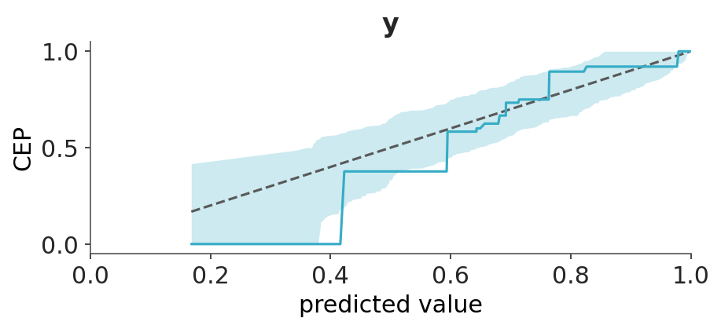
8 Zero-inflated negative-binomial model
As the proportion of zeros is quite high in the data and the calibration plot for negative binomial model indicated slight miscalibration in prediction of zeros and non-zeros, it is worthwhile to test also a zero-inflated negative-binomial model, which is a mixture of two models
- logistic regression to model the proportion of extra zero counts
- negative-binomial model
Fit zero-inflated negative-binomial model.
fit_zinb = bmb.Model(
"y ~ sqrt_roach1 + treatment + senior + offset(log(exposure2))",
roaches,
family="zero_inflated_negativebinomial",
link="log",
priors={
"sqrt_roach1": bmb.Prior("Normal", mu=0, sigma=1),
"treatment": bmb.Prior("Normal", mu=0, sigma=1),
"senior": bmb.Prior("Normal", mu=0, sigma=1),
},
)
idata_zinb = fit_zinb.fit(random_seed=SEED, idata_kwargs={"log_likelihood": True})
# We need to compute log_prior for the prior/likelihood sensitivity step
pm.compute_log_prior(idata=idata_zinb, model=fit_zinb.backend.model, extend_inferencedata=True)
fit_zinb.predict(idata_zinb, kind="response", inplace=True, random_seed=SEED)1000Initializing NUTS using jitter+adapt_diag...
Multiprocess sampling (4 chains in 4 jobs)
NUTS: [alpha, psi, Intercept, sqrt_roach1, treatment, senior]/home/osvaldo/anaconda3/envs/arviz_1/lib/python3.14/site-packages/pymc/sampling/mcmc.py:1164: FutureWarning: Passing `log_likelihood` via `idata_kwargs` is deprecated and will be removed in future versions. Call `pm.compute_log_likelihood(idata)` instead.
return _sample_return(
Sampling 4 chains for 1_000 tune and 1_000 draw iterations (4_000 + 4_000 draws total) took 9 seconds./tmp/ipykernel_18919/3071408116.py:14: DeprecationWarning: `pymc.compute_log_prior` was moved out of the root namespace and will be removed in the first PyMC release of 2027. Use `pymc.stats.compute_log_prior` instead.
pm.compute_log_prior(idata=idata_zinb, model=fit_zinb.backend.model, extend_inferencedata=True)Based on PSIS-LOO, zero-inflated negative-binomial is clearly better.
loo_zinb = az.loo(idata_zinb)
loo_zinb/home/osvaldo/anaconda3/envs/arviz_1/lib/python3.14/site-packages/arviz_stats/loo/helper_loo.py:1146: UserWarning: Estimated shape parameter of Pareto distribution is greater than 0.70 for one or more samples. You should consider using a more robust model, this is because importance sampling is less likely to work well if the marginal posterior and LOO posterior are very different. This is more likely to happen with a non-robust model and highly influential observations.
warnings.warn(Computed from 4000 posterior samples and 262 observations log-likelihood matrix.
Estimate SE
elpd_loo -883.08 38.16
p_loo 8.42 -
There has been a warning during the calculation. Please check the results.
------
Pareto k diagnostic values:
Count Pct.
(-Inf, 0.70] (good) 261 99.6%
(0.70, 1] (bad) 1 0.4%
(1, Inf) (very bad) 0 0.0%p_loo is close to the total number of parameters in the model (9), which is a good sign.
Zero-inflated negative binomial (ZINB) model has clearly better predictive performance than the negative binomial (and all diagnostics are good).
az.compare({
"Neg-bin": idata_nb,
"ZINB": idata_zinb,
})/home/osvaldo/anaconda3/envs/arviz_1/lib/python3.14/site-packages/arviz_stats/loo/helper_loo.py:1146: UserWarning: Estimated shape parameter of Pareto distribution is greater than 0.70 for one or more samples. You should consider using a more robust model, this is because importance sampling is less likely to work well if the marginal posterior and LOO posterior are very different. This is more likely to happen with a non-robust model and highly influential observations.
warnings.warn(
/home/osvaldo/anaconda3/envs/arviz_1/lib/python3.14/site-packages/arviz_stats/loo/helper_loo.py:1146: UserWarning: Estimated shape parameter of Pareto distribution is greater than 0.70 for one or more samples. You should consider using a more robust model, this is because importance sampling is less likely to work well if the marginal posterior and LOO posterior are very different. This is more likely to happen with a non-robust model and highly influential observations.
warnings.warn(| rank | elpd_diff | dse | p_worse | diag_diff | diag_elpd | p | elpd | se | weight | |
|---|---|---|---|---|---|---|---|---|---|---|
| Neg-bin | 0 | 0.0 | 0.0 | NaN | 1 k̂ > 0.70 | 8.0 | -880.0 | 38.0 | 1.0 | |
| ZINB | 1 | -2.0 | 0.9 | 0.97 | |elpd_diff| < 4 | 1 k̂ > 0.70 | 8.4 | -880.0 | 38.0 | 0.0 |
Posterior predictive checking looks good, but there is no clear difference when looking at marginal predictive distributions or LOO-PIT.
pc = az.plot_ppc_dist(idata_zinb, kind="kde")
pc.facet_map("set_xlim", limits=(0, 400))
pc.facet_map("set_xscale", scale="sqrt")/home/osvaldo/proyectos/00_BM/arviz-devs/arviz-plots/src/arviz_plots/plots/utils_ppc.py:66: UserWarning: Detected at least one discrete variable.
Consider using plot_ppc variants specific for discrete data, such as plot_ppc_pava or plot_ppc_rootogram.
warn_if_discrete(observed_dist, predictive_dist, kind)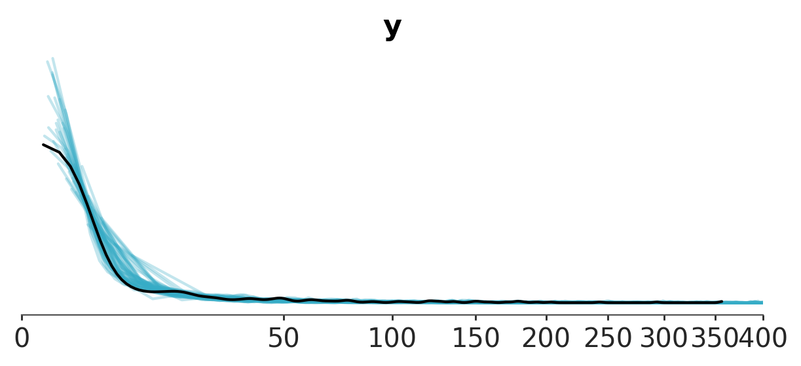
pc = az.plot_ppc_rootogram(idata_zinb)
pc.facet_map("set_xlim", limits=(0, 400))
pc.facet_map("set_xscale", scale="sqrt")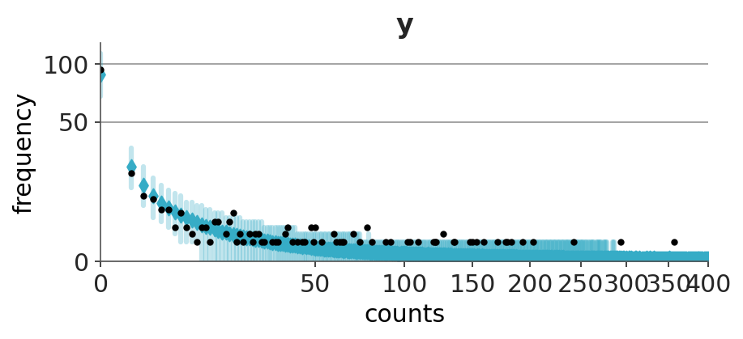
az.plot_ppc_pit(idata_zinb)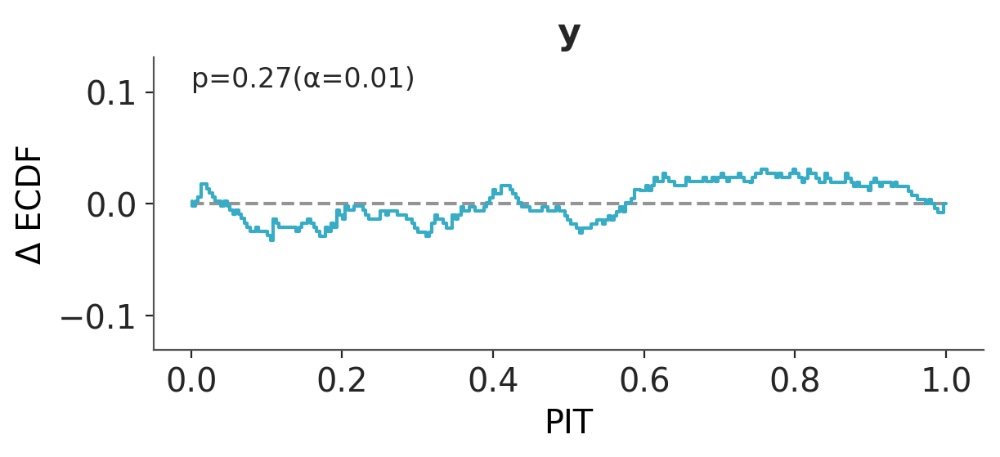
LOO-PIT-ECDF
az.plot_loo_pit(idata_zinb)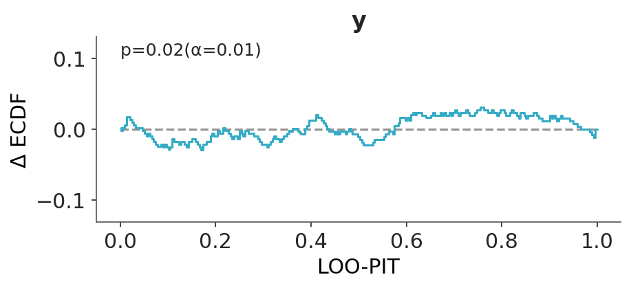
Reliability diagram assessing the calibration of predicted probabilities of zero vs non-zero looks clearly better than the one for negative binomial model.
pp_binary = (idata_zinb.posterior_predictive["y"] > 0).astype(float)
y_binary = (idata_zinb.observed_data["y"] > 0).astype(float)
idata_binary_zinb = az.from_dict({
"posterior_predictive": {"y": pp_binary},
"observed_data": {"y": y_binary},
})
pc = az.plot_ppc_pava(idata_binary_zinb, var_names="y")
pc.facet_map("set_xlim", limits=(0, 1))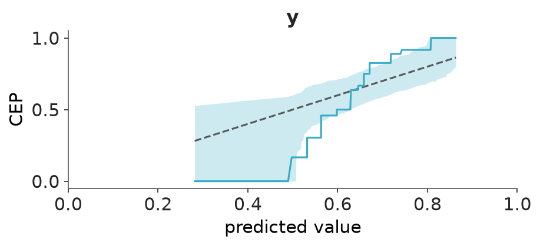
Although the models are different, with finite data and wide LOO predictive distributions, there is a limit in which differences can be see in LOO-PIT values. Both negative-binomial and zero-inflated negative binomial are close enough the LOO-PIT can’t see discrepancy from the data, but elpd_loo and calibration plot were able to to show that zero-inflation component improves the predictive accuracy and calibration.
8.1 Analyse posterior
Plot posterior
pc = az.plot_ridge(
idata_zinb,
var_names=["sqrt_roach1", "treatment", "senior"],
combined=True,
)
pc.coords = {"column": "ridge"}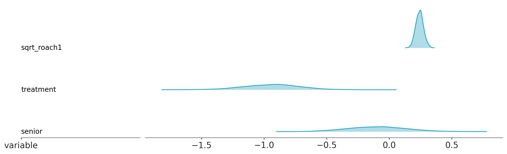
The posterior marginals for negative-binomial part are similar to marginals in the plain negative-binomial model. The marginal effects for the logistic part have opposite sign as the logistic part is modelling the extra zeros.
The treatment effect is now divided between negative-binomial and logistic part. We can use the model to make predictions for the expected number of roaches given treatment and no-treatment to get one marginal posterior to examine.
Expectations of posterior predictive distributions given treatment=0 and treatment=1
roaches_t0 = roaches.copy()
roaches_t1 = roaches.copy()
roaches_t0["treatment"] = 0
pred_zinb_t0 = fit_zinb.predict(idata_zinb, data=roaches_t0, kind="response", inplace=False, random_seed=SEED)
roaches_t1["treatment"] = 1
pred_zinb_t1 = fit_zinb.predict(idata_zinb, data=roaches_t1, kind="response", inplace=False, random_seed=SEED)Ratio of expected number of roaches with vs without treatment
group = "posterior_predictive"
mean_t0 = pred_zinb_t0.posterior_predictive["y"].mean(dim="__obs__")
mean_t1 = pred_zinb_t1.posterior_predictive["y"].mean(dim="__obs__")
ratio_zinb = az.from_dict({group: {"ratio": mean_t1 / mean_t0}})
pc =az.plot_dist(
ratio_zinb,
group=group,
kind="dot",
visuals = {"point_estimate": False,
"point_estimate_text": False,
"credible_interval": False,
"title": {"text": "expected number of roaches\n with vs without treatment"}
}
)
az.add_lines(pc, 1, color="gray", linestyle="dotted")
pc.facet_map("set_xlim", limits=(0, 1.01))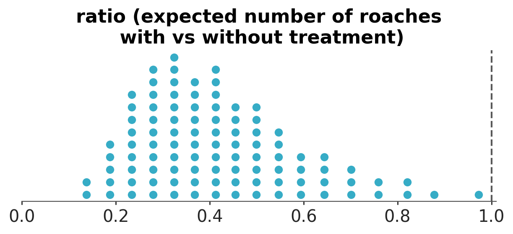
The treatment clearly reduces the expected number of roaches.
Assuming our model is causally sensible, we can trust the posterior more if the model has well calibrated predictive distributions (passes posterior and LOO predictive, and calibration checking). For illustration purposes, we compare the posteriors using Poisson, negative binomial and zero-inflated negative binomial.
pred_p_t0 = fit_p.predict(idata_p, data=roaches_t0, kind="response", inplace=False, random_seed=SEED)
pred_p_t1 = fit_p.predict(idata_p, data=roaches_t1, kind="response", inplace=False, random_seed=SEED)
mean_p_t0 = pred_p_t0.posterior_predictive["y"].mean(dim="__obs__")
mean_p_t1 = pred_p_t1.posterior_predictive["y"].mean(dim="__obs__")
ratio_p = mean_p_t1 / mean_p_t0
pred_nb_t0 = fit_nb.predict(idata_nb, data=roaches_t0, kind="response", inplace=False, random_seed=SEED)
pred_nb_t1 = fit_nb.predict(idata_nb, data=roaches_t1, kind="response", inplace=False, random_seed=SEED)
mean_nb_t0 = pred_nb_t0.posterior_predictive["y"].mean(dim="__obs__")
mean_nb_t1 = pred_nb_t1.posterior_predictive["y"].mean(dim="__obs__")
ratio_nb = mean_nb_t1 / mean_nb_t0
ratios = {"NB":az.from_dict({group: {"y": mean_nb_t1 / mean_nb_t0}}),
"Poisson":az.from_dict({group: {"y": mean_p_t1 / mean_p_t0}}),
"ZINB":az.from_dict({group: {"y": mean_t1 / mean_t0}}),
}pc = az.plot_dist(
ratios,
group=group,
visuals = {"dist": False}
)
az.add_lines(pc, 1, color="gray", linestyle="dotted")
pc.add_legend("model")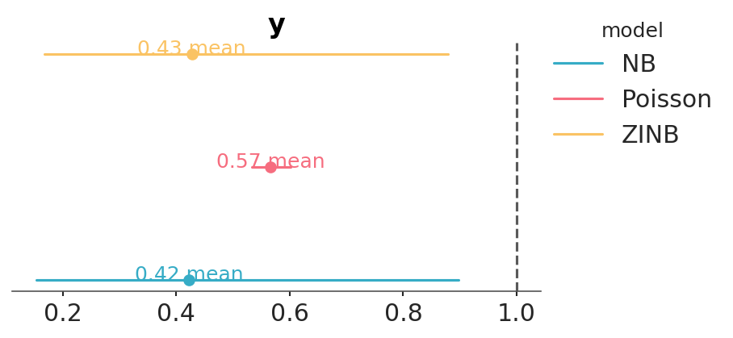
All models show benefit of treatment, but Poisson model is overconfident with too narrow posterior. Posteriors using negative binomial (NB) and zero-inflated negative binomial (ZINB) are quite similar and in this case it would not probably matter for decision making even if the slightly worse negative binomial model would have been used.
8.2 Prior sensitivity analysis
Finally we make prior sensitivity analysis by power-scaling both prior and likelihood. As there is posterior dependency between the negative binomial and zero-inflated coefficients, it is not that useful to look at the prior sensitivity for the parameters. We focus on the actual quantity of interest, that is, the ratio of expected number of roaches with vs without treatment.
idata_zinb.posterior["ratio"] = ratio_zinb.posterior_predictive.dataset["ratio"]
az.psense_summary(idata_zinb, var_names="ratio")| prior | likelihood | diagnosis | |
|---|---|---|---|
| ratio | 0.031 | 0.048 | ✓ |
There is no prior sensitivity and the likelihood is informative.
8.3 Predictive relevance of covariates
Let’s finally check cross-validation model comparison to see whether improved model has effect on the predictive performance comparison.
fit_zinb_m2 = bmb.Model(
"y ~ sqrt_roach1 + senior + offset(log(exposure2))",
roaches,
family="zero_inflated_negativebinomial",
link="log",
priors={
"sqrt_roach1": bmb.Prior("Normal", mu=0, sigma=1),
"senior": bmb.Prior("Normal", mu=0, sigma=1),
},
)
idata_zinb_m2 = fit_zinb_m2.fit(random_seed=SEED, idata_kwargs={"log_likelihood": True})1000Initializing NUTS using jitter+adapt_diag...
Multiprocess sampling (4 chains in 4 jobs)
NUTS: [alpha, psi, Intercept, sqrt_roach1, senior]/home/osvaldo/anaconda3/envs/arviz_1/lib/python3.14/site-packages/pymc/sampling/mcmc.py:1164: FutureWarning: Passing `log_likelihood` via `idata_kwargs` is deprecated and will be removed in future versions. Call `pm.compute_log_likelihood(idata)` instead.
return _sample_return(
Sampling 4 chains for 1_000 tune and 1_000 draw iterations (4_000 + 4_000 draws total) took 10 seconds.az.compare({
"ZINB full model": idata_zinb,
"ZINB w/o treatment": idata_zinb_m2,
})/home/osvaldo/anaconda3/envs/arviz_1/lib/python3.14/site-packages/arviz_stats/loo/helper_loo.py:1146: UserWarning: Estimated shape parameter of Pareto distribution is greater than 0.70 for one or more samples. You should consider using a more robust model, this is because importance sampling is less likely to work well if the marginal posterior and LOO posterior are very different. This is more likely to happen with a non-robust model and highly influential observations.
warnings.warn(
/home/osvaldo/anaconda3/envs/arviz_1/lib/python3.14/site-packages/arviz_stats/loo/helper_loo.py:1146: UserWarning: Estimated shape parameter of Pareto distribution is greater than 0.70 for one or more samples. You should consider using a more robust model, this is because importance sampling is less likely to work well if the marginal posterior and LOO posterior are very different. This is more likely to happen with a non-robust model and highly influential observations.
warnings.warn(| rank | elpd_diff | dse | p_worse | diag_diff | diag_elpd | p | elpd | se | weight | |
|---|---|---|---|---|---|---|---|---|---|---|
| ZINB full model | 0 | 0.0 | 0.0 | NaN | 1 k̂ > 0.70 | 8.4 | -880.0 | 38.0 | 0.86 | |
| ZINB w/o treatment | 1 | -10.0 | 5.3 | 0.94 | 1 k̂ > 0.70 | 7.8 | -890.0 | 39.0 | 0.14 |
Treatment effect improves the predictive performance with 96% probability. However, as the distribution of the pointwise differences seem to have a thick tail, the estimated probability using the normal approximation can be sensitive to a few biggest pointwise differences, which are due to the a few biggest numbers of roaches observed. Interestingly in this case, both models pass model checking, seem to be well specified, the distributions of pointwise elpds do not have thick tails, and we are able to reliably estimate elpd_loo for each model. This indicates that elpd_diff is likely to be well estimated, but the distribution of pointwise differences having thicker tail make se_diff and the normal approximation based p_worse unreliable. The conclusion is that the full model has slightly better predictive performance.
As the variation in the number of roaches is high in both treatment groups, it is difficult to predict the number of roaches per apartment making the difference in predictive performance also small, even we can clearly see clear difference in the expected number of roaches in the groups.
References
Dimitriadis, T., T. Gneiting, and A. I. Jordan. 2021. “Stable Reliability Diagrams for Probabilistic Classifiers.” Proceedings of the National Academy of Sciences 118 (e2016191118).
Gelman, Andrew, and Jennifer Hill. 2007. Data Analysis Using Regression and Multilevel/Hierarchical Models. Cambridge University Press.
Säilynoja, T., A. R. Johnson, O. A. Martin, and A. Vehtari. 2025. “Recommendations for Visual Predictive Checks in Bayesian Workflow.”
Vehtari, Aki, Andrew Gelman, and Jonah Gabry. 2017. “Practical Bayesian Model Evaluation Using Leave-One-Out Cross-Validation and WAIC.” Statistics and Computing 27 (5): 1413–32. https://doi.org/10.1007/s11222-016-9696-4.
Vehtari, Aki, Tommi Mononen, Ville Tolvanen, Tuomas Sivula, and Ole Winther. 2016. “Bayesian Leave-One-Out Cross-Validation Approximations for Gaussian Latent Variable Models.” The Journal of Machine Learning Research 17 (1): 3581–3618.
Licenses
- Code © 2017–2025, Aki Vehtari, licensed under BSD-3.
- Text © 2017–2025, Aki Vehtari, licensed under CC-BY-NC 4.0.